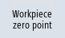

You have the option of defining a new reference point if the zero point from the 3D model deviates from the workpiece zero.
|
Note
|
|
First set the zero point plane for the relevant plane before inserting features and elements into the program with "Accept".
|
Procedure
| | 1. | Select machining step "Workpiece". |
|  | 2. | Press the "Workpiece zero point" softkey. The "Workpiece zero" window opens. |
| | 3. | Select how the zero point is defined. |
| | 4. | Select the required references in field "Selection". |
| | | - OR - |
| | | Select the required references in the 3D model. The selected elements are highlighted in the 3D model and displayed in field "Selection". |
| | 5. | To align the coordinate origin, select parameters "Direction Z", "Direction X" and "Rotation X". |
 | 6. | Confirm your selection with "Accept". |